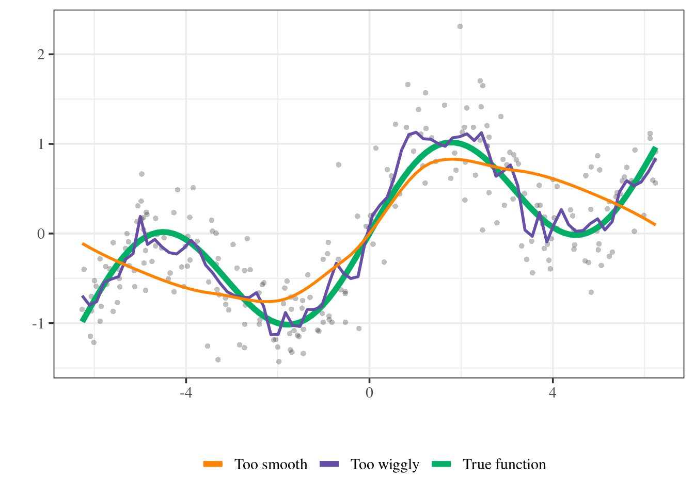

Preface
This worksheet collection was originally created by Prof. Salibián-Barrera when he taught this course in 2019 and previous iterations. For the 2021 version, Prof. McDonald made some revisions and turned them into a book for use during labs and as a supplement to the course readings.
The expectation is that you will run through the worksheets on your own or during lab sections. This material is fair game for the final exam.

To run these, you need a number packages. To attempt to install them all at once, try:
if (!suppressWarnings(require(remotes, quietly = TRUE)))
install.packages("remotes")
tmp <- tempdir()
dp <- file.path(tmp, "DESCRIPTION")
download.file(
"https://raw.githubusercontent.com/UBC-STAT/stat-406-worksheets/main/DESCRIPTION",
dp
)
remotes::install_deps(tmp)
unlink(tmp)
rm(tmp, dp)| package | version | source |
|---|---|---|
| adabag | 5.0 | RSPM |
| bookdown | 0.35 | RSPM |
| bslib | 0.5.1 | RSPM |
| class | 7.3-22 | CRAN (R 4.3.1) |
| cluster | 2.1.4 | CRAN (R 4.3.1) |
| countrycode | 1.5.0 | RSPM |
| desc | 1.4.2 | RSPM |
| downlit | 0.4.3 | RSPM |
| ElemStatLearn | 2015.6.26.2 | Github (cran/ElemStatLearn@253e54016d004ac67879b594311651be3debbed4) |
| flexclust | 1.4-1 | RSPM |
| formatR | 1.14 | RSPM |
| ggcorrplot | 0.1.4 | RSPM |
| ggplot2 | 3.4.3 | RSPM |
| glmnet | 4.1-7 | RSPM |
| ISLR2 | 1.3-2 | RSPM |
| KernSmooth | 2.23-21 | CRAN (R 4.3.1) |
| knitr | 1.43 | RSPM |
| lars | 1.3 | RSPM |
| leaps | 3.1 | RSPM |
| MASS | 7.3-60 | CRAN (R 4.3.1) |
| mclust | 6.0.0 | RSPM |
| mvtnorm | 1.2-2 | RSPM |
| nnet | 7.3-19 | CRAN (R 4.3.1) |
| randomForest | 4.7-1.1 | RSPM |
| rmarkdown | 2.24 | RSPM |
| robustbase | 0.99-0 | RSPM |
| rpart | 4.1.19 | CRAN (R 4.3.1) |
| rworldmap | 1.3-6 | RSPM |
| scales | 1.2.1 | RSPM |
| SemiPar | 1.0-4.2 | RSPM |
| sessioninfo | 1.2.2 | RSPM |
| tibble | 3.2.1 | RSPM |
| tidyverse | 2.0.0 | RSPM |
| tree | 1.0-43 | RSPM |
These notes are licensed under a Creative Commons Attribution-ShareAlike 4.0 International License. See the human-readable version here and the real thing here.